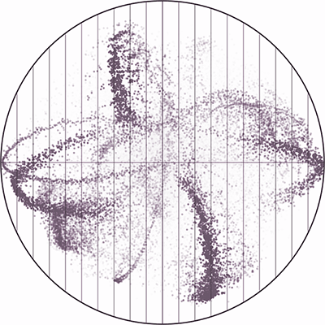

Proof of concept prototype that demonstrates a novel spatial encoding of correlation.
The s-CorrPlot is a new scatterplot for visually exploring pairwise correlation coefficients between all variables in large datasets.
The degree of correlation between variables is used in many data analysis applications as a key measure of similarity. The most common techniques for visualizing correlation, like scatterplot matrices and clustered heatmaps, however, do not scale well to large datasets, either computationally or visually. We present a new visualization that is capable of encoding pairwise correlation between hundreds of thousands variables, called the s-CorrPlot. The s-CorrPlot is based on a 2D scatterplot and exploits the geometric structure underlying Pearson’s correlation to derive a novel spatial encoding. The s-CorrPlot not only depicts a visually precise measure of correlation, but also supports visualizing metadata using encoding channels like color. We implemented the s-CorrPlot as an open-source proof of concept visualization in order to validate its effectiveness through a variety of methods including a case study with a biology collaborator.
This proof of concept employs simple multidimensional exploration techniques, to demonstrate how this visual encoding can employ the vast set of these exploration techniques for exploring correlation.
For further details, please read the description and derivation of the s-CorrPlot in our paper.
The s-CorrPlot has been implemented within a proof of concept prototype: Gyroscope. The proof of concept is integrated within the R statistical framework for data input and output. The Gyroscope code is written in C++ and OpenGL.
The source code has been compiled and tested on both Mac OS X and Linux.
To compile Gyroscope through R, the following components must be installed:
Be sure to install all dependencies, as detailed above.
Then, simply run the install script as root:
sudo ./install
If it prints out "Done", then Gyroscope has installed correctly inside R, as the library "gyroscope".
To explore correlation, you can load the data from the paper in our proof of concept visualization. Sample scripts load the data in R, and the data is provided in R format so that you can input your own data, too.
Each script loads a different dataset, corresponding to figures from the paper. The variables being correlated are listed first in the description:
Certain datasets have been anonymized in order to protect our biology collaborator's sensitive data.
These scripts can be run from terminal or loaded in R:
./genes.R
or
R
source("genes.R")
Please note that these scripts cannot be run from the R GUI program; they must be executed from the terminal.
For further instructions on how to use Gyroscope, please read the code documentation.
Run the uninstall script as root or start R to remove the Gyroscope package:
sudo ./uninstall
or
R
remove.packages("gyroscope")
This project's codebase (Gyroscope) is licensed by GPLv2.
Sean McKenna, Miriah Meyer, Christopher Gregg, & Samuel Gerber
The Gyroscope code was originally designed and developed by Samuel Gerber.
If you have any difficulties or questions, please contact sean@cs.utah.edu.